מעשרותי
עשר תעשר – בשביל שתתעשרמחשבון מעשרות שעושה סדר: רושמים כל הכנסה וכל נתינה, ומעשרותי מחשבת כמה נשאר לתת. מעשר או חומש, ניכוי הוצאות, משכורת קבועה עם תזכורת, קופת מעשרות, צילום קבלות ודוח לסעיף 46.
הורד 7 פעמים כל המספרים
התקנה באייפון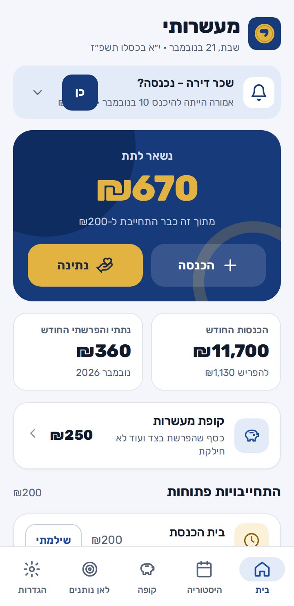
מה חדש
גרסה 1.0- הגרסה הראשונה של מעשרותי: חישוב מעשר או חומש מכל הכנסה, עם ניכוי הוצאות
- הכנסות קבועות (משכורת) עם תזכורת ביום שלהן ואישור בלחיצה אחת
- נתינות עם צילום קבלה, התחייבויות, וקופת מעשרות לכסף שהופרש בצד
- נתינה מראש נשמרת כזכות ומקוזזת מההכנסות הבאות
- לאן אני נותן: מקומות עם אחוזים והצעת חלוקה
- היסטוריה לפי חודשים עם תאריכים עבריים, ייצוא לאקסל ודוח לסעיף 46
- תזכורת שבועית, גיבוי ושחזור, מצב בהיר וכהה, וגם לאייפון
עובדת גם בלי אינטרנט
- כל ההכנסות, הנתינות, הקופה והמקומות נשמרים רק בטלפון שלכם. לא צריך חשבון והנתונים לא עולים לשום מקום.
- החישוב, ההיסטוריה, הדוחות והתזכורות עובדים בלי אינטרנט.
- צילומי הקבלות נשמרים בטלפון.
- גיבוי, ייצוא לאקסל ושיתוף האפליקציה כקובץ עובדים בלי אינטרנט.
צריך אינטרנט רק כדי לבדוק עדכונים ולשלוח פנייה למפתח (פנייה שנכתבה בלי אינטרנט נשלחת לבד כשהחיבור חוזר).
התקנה באנדרואיד
- מורידים
לוחצים "הורדה לאנדרואיד" למעלה. הקובץ maasroti.apk יורד לטלפון.
- מתקינים
פותחים את הקובץ מההתראות או מתיקיית ההורדות. בפעם הראשונה מאשרים "התקנה ממקור לא ידוע".
- מתחילים
בפתיחה הראשונה בוחרים מעשר או חומש, ואם יש – חוב מלפני. אחר כך מוסיפים את ההכנסה הראשונה.
אם מופיעה אזהרה של Google Play Protect על אפליקציה לא מוכרת, בוחרים להתקין בכל זאת. זה קורה בכל אפליקציה שלא הורדה מחנות Google Play. את העדכונים הבאים לא צריך להוריד: הם נכנסים מתוך האפליקציה.
התקנה באייפון
באייפון פותחים את מעשרותי מהאתר ומוסיפים אותה למסך הבית. מקבלים סמל כמו של כל אפליקציה, היא נפתחת במסך מלא ועובדת גם בלי אינטרנט.
לוחצים על הכפתור באייפון, והקישור נפתח בספארי. גולשים מהמחשב? סורקים את הקוד עם המצלמה של האייפון.
luach-sport.github.io/maasroti/app
- פותחים בספארי
דרך הכפתור או הקוד שכאן. אם הקישור נפתח בתוך וואטסאפ או טלגרם, קודם פותחים אותו בספארי.
- לוחצים על שיתוף
כפתור השיתוף (ריבוע עם חץ למעלה) נמצא בתחתית המסך. באייפון עם גרסה חדשה הוא בתפריט ••• שליד שורת הכתובת.
- "הוספה למסך הבית"
גוללים קצת למטה ברשימה ובוחרים "הוספה למסך הבית" (Add to Home Screen). אם יש מתג של פתיחה כאפליקציה (Open as Web App), משאירים אותו דלוק ולוחצים "הוספה".
- פותחים ממסך הבית
מעכשיו פותחים את מעשרותי מהסמל שבמסך הבית. באפליקציה עצמה יש את אותו הסבר, למקרה הצורך.
הנתונים שבספארי ושבאפליקציה שבמסך הבית נשמרים בנפרד, לכן מוסיפים למסך הבית לפני שמתחילים להשתמש. אם מוחקים את מעשרותי ממסך הבית, הנתונים נמחקים איתה, אז כדאי לשמור גיבוי מדי פעם (הגדרות ← גיבוי לקובץ).
- תזכורות: באייפון התזכורות מופיעות במסך הבית של האפליקציה (למשל "משכורת – נכנסה?"), ולא כהתראה בטלפון.
- צילום קבלה: נפתחת המצלמה או הגלריה של האייפון.
- עדכונים: נכנסים לבד. כשיש אינטרנט הגרסה החדשה יורדת ברקע ונפתחת בפעם הבאה שחוזרים לאפליקציה.
- שיתוף עם חברים: שולחים קישור לאתר הזה. שליחת האפליקציה כקובץ (APK) היא לאנדרואיד בלבד.
- גיבוי וייצוא לאקסל: נפתח תפריט השיתוף של האייפון, ושם בוחרים "שמירה בקבצים", וואטסאפ או מייל.
בית
במבט אחד: כמה נשאר לתת, ואם נתת מראש – כמה זכות יש לך.
- נשאר לתתהסכום הגדול: כל המעשרות מההכנסות, פחות מה שכבר נתת ומה שהפרשת לקופה. כשהכל משולם מופיע "הכל מסודר", וכשנתת יותר – "יש לך זכות".
- + הכנסהרישום הכנסה חדשה. איך זה עובד
- נתינהרישום נתינה. איך זה עובד
- נכנסה?כשמשכורת קבועה הייתה אמורה להיכנס. "כן" רושם אותה ומחשב מעשר, והחץ פותח "נכנס סכום אחר" או "לא נכנסה החודש".
- הכנסות החודשכמה נכנס החודש, וכמה מזה להפריש. לידו: כמה נתת והפרשת החודש.
- קופת מעשרותכמה כסף מופרש בצד ועוד לא חולק. לחיצה פותחת את הקופה.
- התחייבויות פתוחותנתינות שהתחייבת ועוד לא שילמת. "שילמתי" מסמן ששולם.
- הצעת חלוקהאיך לחלק את מה שנשאר לפי האחוזים של המקומות שלך. לחיצה על מקום פותחת נתינה עם הסכום.
- פעולות אחרונותההכנסות והנתינות האחרונות. לחיצה על שורה פותחת אותה לעריכה או מחיקה.
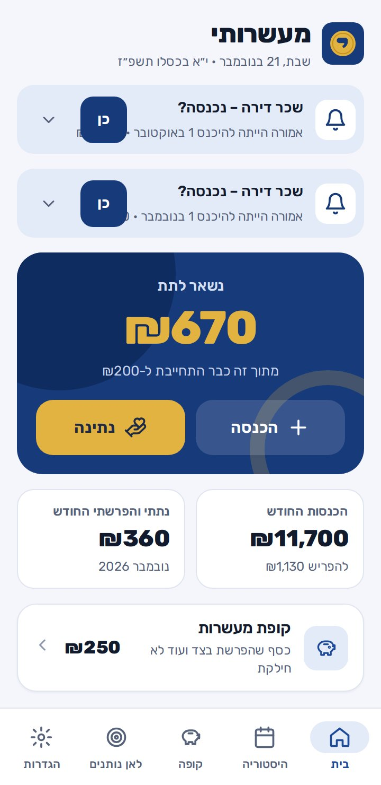
הוספת הכנסה
רושמים כמה נכנס, ומיד רואים כמה להפריש.
- כמה נכנסהסכום שנכנס בפועל (נטו).
- ניכוי הוצאותהוצאות שמותר לנכות לפני החישוב, כמו נסיעות או הוצאות עבודה. הן יורדות מהסכום לפני שמחשבים את המעשר.
- מעשר / חומש / אחר10%, 20% או כל אחוז אחר, בכל הכנסה בנפרד. ברירת המחדל נקבעת בהגדרות.
- להפרישהחישוב החי: כמה מעשר יוצא מההכנסה הזו.
- מקורמשכורת, עבודה נוספת, עסק, מתנה ועוד, או שם משלכם.
- תאריךעם התאריך העברי מתחת.
- נכנסת כל חודששומר אותה גם כהכנסה קבועה, עם תזכורת כל חודש באותו יום.
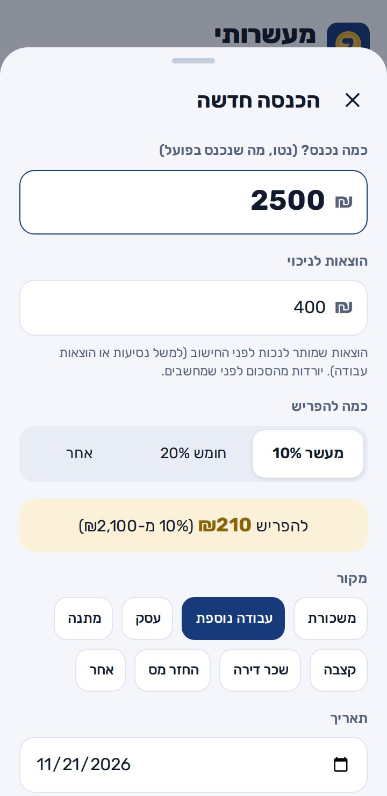
הוספת נתינה
כל נתינה מורידה מהחוב, ונשמרת עם כל הפרטים.
- סכוםכמה נתת. מתחת מופיע כמה נשאר לתת.
- למיבוחרים מהמקומות הקבועים, או כותבים שם.
- כבר נתתי / התחייבתיהתחייבות לא מורידה מהחוב עד שמסמנים "שילמתי".
- מקופת המעשרותכשהכסף יוצא מהקופה. הוא כבר הופרש, ולכן יורד מהקופה ולא שוב מהחוב.
- סעיף 46נתינה למוסד מוכר. נכנסת לדוח השנתי לזיכוי ממס.
- צילום קבלהמצלמים את הקבלה או בוחרים מהגלריה. התמונה נשמרת בטלפון, ואפשר להגדיל ולשתף אותה.
- מספר קבלהמופיע בדוח לסעיף 46.
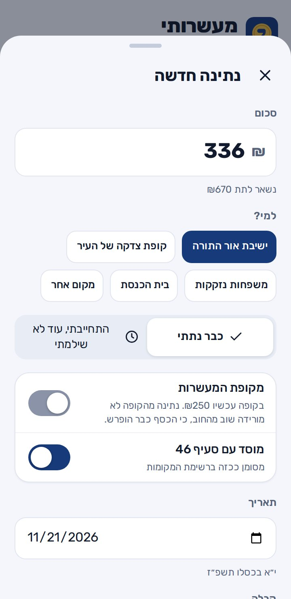
היסטוריה
כל החודשים, וכמה היה להפריש מול כמה ניתן.
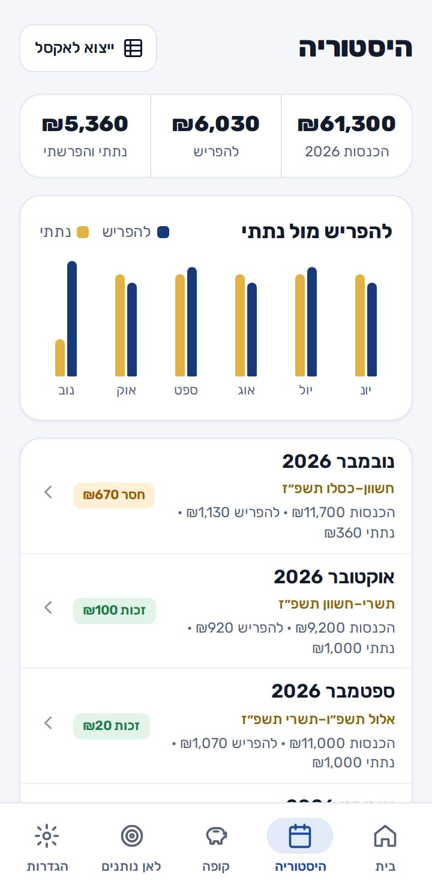
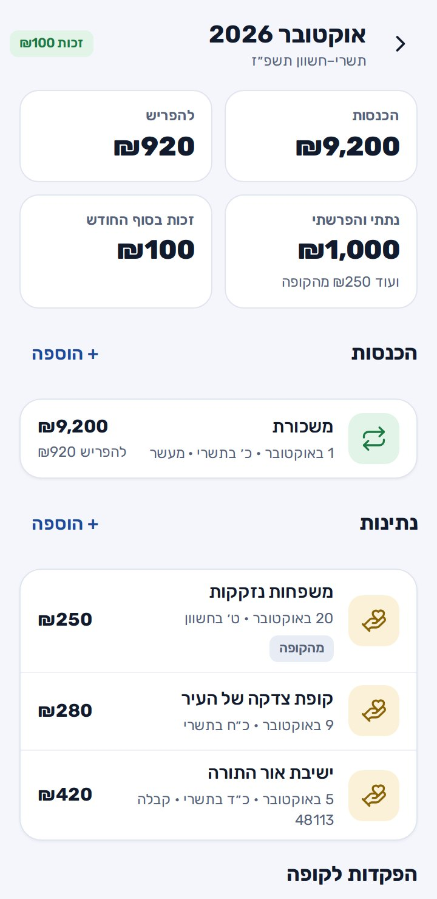
קופת מעשרות
למי שמפריש את המעשרות לחשבון או לקופה בצד, ומחלק לאט לאט.
- בקופה עכשיוכמה הופרש ועוד לא חולק.
- הפקדה לקופההפקדה נחשבת כאילו כבר נתת: היא יורדת מהחוב.
- להפקיד הכלכשנשאר חוב: מפקיד בלחיצה את כל מה שנשאר.
- נתינה מהקופהנתינה שיוצאת מהכסף שבקופה.
- תנועות בקופהכל ההפקדות והנתינות מהקופה. לחיצה פותחת לעריכה.
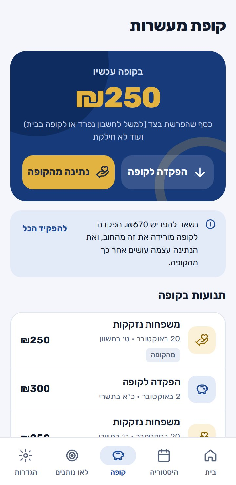
לאן אני נותן
המקומות הקבועים שלכם, וכמה נתתם לכל אחד השנה.
- מקום חדששם, אחוז מהחלוקה (לא חובה), ואם זה מוסד מוכר לסעיף 46.
- + נתינהנתינה למקום הזה.
- הצעת חלוקהמה שנשאר לתת, מחולק לפי האחוזים. לחיצה פותחת נתינה עם הסכום.
- התחייבויות פתוחותעם כפתור "שילמתי".
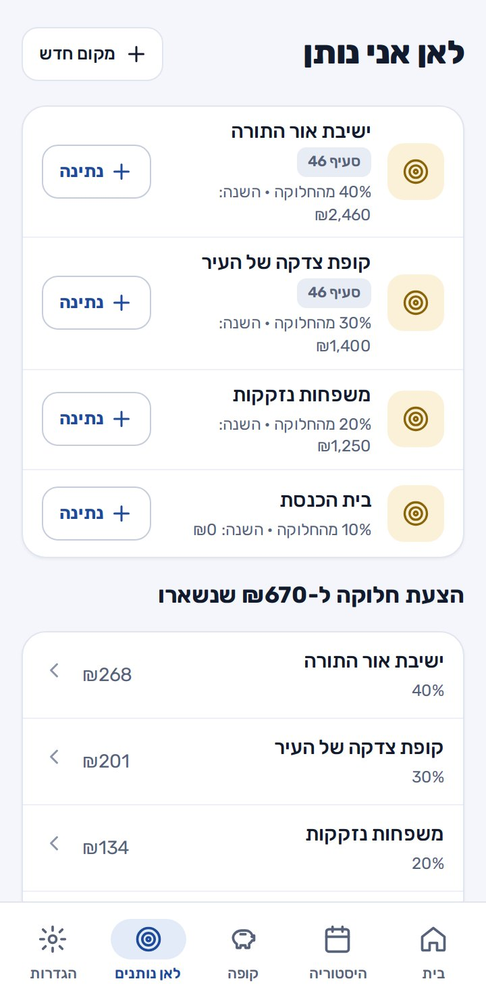
משכורת קבועה ותזכורות
מגדירים פעם אחת, והאפליקציה זוכרת כל חודש.
- הכנסה קבועהשם, הסכום הרגיל, הוצאות לניכוי, מעשר או חומש, ובאיזה יום בחודש היא נכנסת.
- ביום המשכורתמגיעה התראה, ובמסך הבית מופיע "נכנסה?". לחיצה אחת רושמת אותה.
- תזכורת שבועיתביום ובשעה שבוחרים: כמה נשאר לתת, והאם היו הכנסות לעדכן.
- השהיה ומחיקההכנסה קבועה אפשר להשהות או למחוק. הכנסות שכבר נרשמו נשארות.
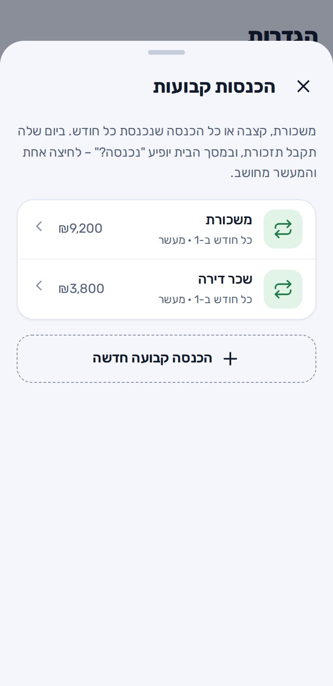
הגדרות
איך מחשבים, תזכורות, תצוגה, גיבוי ודוחות.
- כמה להפרישמעשר 10%, חומש 20% או אחוז אחר, כברירת מחדל לכל הכנסה חדשה.
- נתינה מראש נחשבתכשנתת יותר מהחוב, ההפרש נשמר כזכות ומקוזז מההכנסות הבאות. אפשר לכבות.
- יתרת פתיחהחוב מעשרות מלפני שהתחלתם להשתמש באפליקציה, או זכות.
- תזכורותשבועית ביום ובשעה שתבחרו, וביום של כל משכורת קבועה.
- תאריכים עברייםליד כל תאריך ובחודשים בהיסטוריה.
- מראהבהיר, כהה או לפי הטלפון.
- גיבוי ושחזורכל הנתינות, ההכנסות וצילומי הקבלות בקובץ אחד. שומרים בדרייב, בוואטסאפ או במחשב, ומשחזרים בכל טלפון.
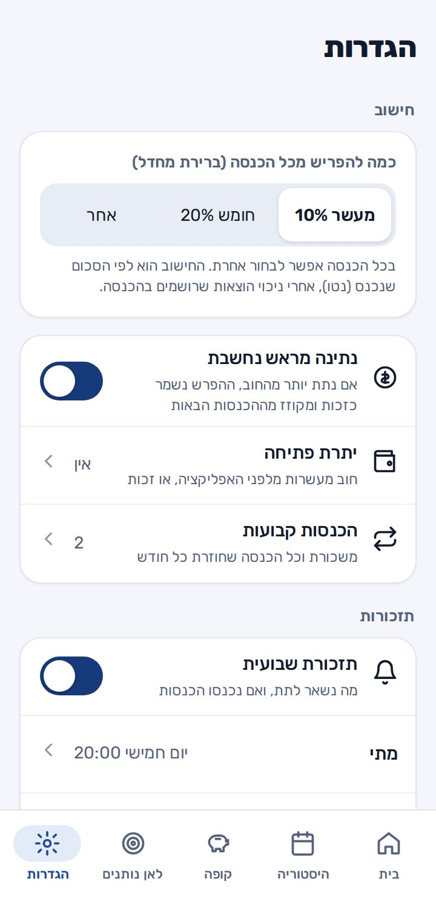
אקסל ודוח לסעיף 46
כל הנתונים בטבלאות, וסיכום שנתי לזיכוי ממס.
- ייצוא לאקסלשלושה קבצים שנפתחים באקסל ובגוגל שיטס: הכנסות, נתינות (כולל הפקדות לקופה), וסיכום לפי חודשים עם תאריכים עבריים.
- דוח לסעיף 46בוחרים שנה ורואים את כל הנתינות למוסדות מוכרים, עם מספרי הקבלות והסכום הכולל. אפשר לייצא לאקסל.
- חסר מספר קבלהמסומן בדוח, כדי שתשלימו לפני שמגישים.
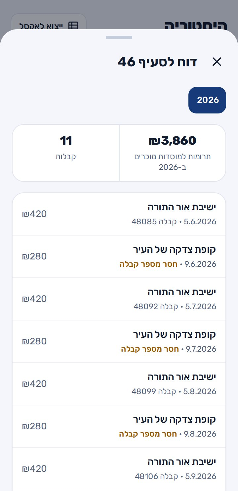
עדכונים
כשיוצאת גרסה חדשה, בפתיחת האפליקציה קופץ חלון "גרסה חדשה" עם רשימה של מה השתנה.
- עדכון עכשיוהעדכון נכנס בתוך האפליקציה, והיא נפתחת מחדש בגרסה החדשה. לא צריך להתקין קובץ, וכל הנתונים נשארים.
- הורדת הגרסה החדשהמופיע רק בגרסה שמשנה את המנוע של האפליקציה. מתקינים אותה פעם אחת מעל הקיימת, והנתונים נשארים.
- אחר כךסוגר את החלון. אפשר לעדכן מתי שרוצים.
- בדיקת עדכוניםהגדרות ← כללי ← בדיקת עדכונים
אם רוצים לבדוק בעצמכם.
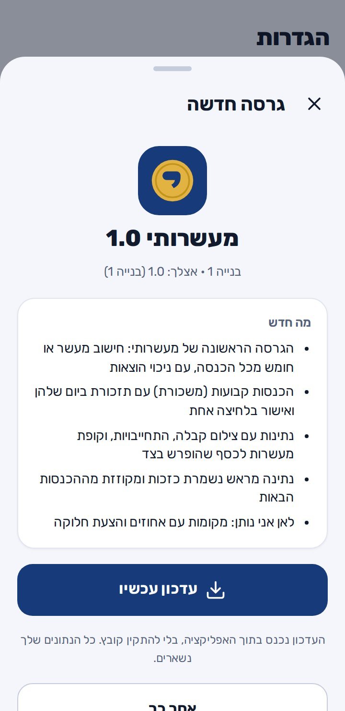
מה מבקשים מכם
להשתמש באפליקציה כרגיל, ולספר מה לא עבד, מה לא היה ברור, ומה חסר לכם.
- איפההגדרות ← פנייה / הצעת ייעול
- מה ממלאיםסוג (הצעת ייעול, תקלה או אחר), שם, מייל, ומה רציתם להגיד.
- שליחת הפנייההפנייה מגיעה ישר למפתח. אם אין אינטרנט, היא נשמרת ונשלחת לבד כשהחיבור חוזר.
- הפניות שלימתחת לטופס רואים כל פנייה ששלחתם, ואם היא כבר נשלחה.
- טיפ לתקלותכתבו מה לחצתם, מה ציפיתם שיקרה ומה קרה בפועל, ובאיזה מסך זה קרה.
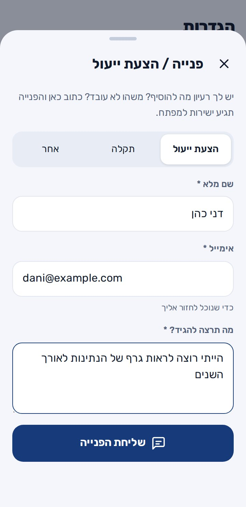
פותח על ידי Itzko
מעשרותי היא אפליקציה עצמאית של Itzko: בלי פרסומות, בלי הרשמה, והנתונים שלכם נשארים אצלכם בטלפון. כל רעיון או תקלה מגיעים ישירות אליו דרך "פנייה / הצעת ייעול" בהגדרות של האפליקציה.